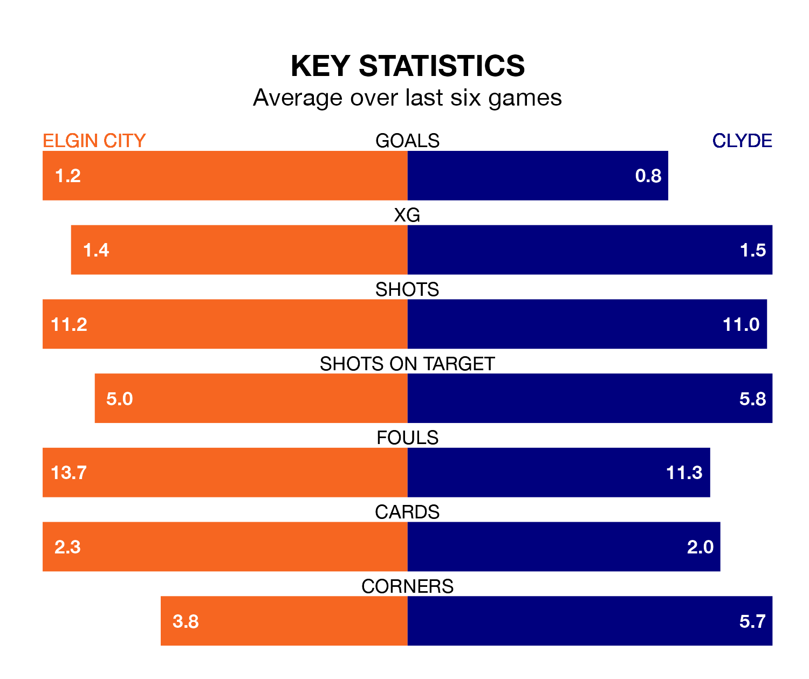

Struggling Clyde face Elgin City away at Borough Briggs on Saturday looking to build on a win in their last league outing.
After securing all three points with a 1-0 victory over East Fife on April 27, the Bully Wee sit ninth in League Two.
They travel to play an Elgin side seventh in the standings, who were held in their last match, 2-2 against Dumbarton.
In the last 10 years, Elgin and Clyde have played each other on 24 occasions. Elgin won 10 of them, Clyde 12, and they drew twice.
On average, the Black & Whites scored 1.4 goals and the Bully Wee 1.5 in those matches.
Their last meeting was on March 2, when Clyde won 2-1 at home.
With 35 goals in 35 games so far this season, Elgin are the league's lowest scorers with 1.0 goals per game. And they are conceding more than average, letting in 56 goals at a rate of 1.6 per game.
Clyde are also below average scorers, with 1.2 goals per game, compared to a league average of 1.3. They have conceded 1.7 goals per game.
City are in disappointing form in League Two, with no wins and five draws from their last six games.
With two wins and two draws over that period, the Bully Wee's form is better – they have taken eight points from 18, compared to the Black & Whites' five.
In Martin Rennie, the away side have one of the league's most on-form strikers so far this season. He has notched 11 goals in 29 appearances, to sit fifth in the scoring charts.
His goal rate of one every 190 minutes is much quicker than that of Russell Dingwall, the hosts' top scorer with a goal every 434 minutes, and a total of six goals in 30 games.
Updated: 12:00 (UTC), 02/05/24